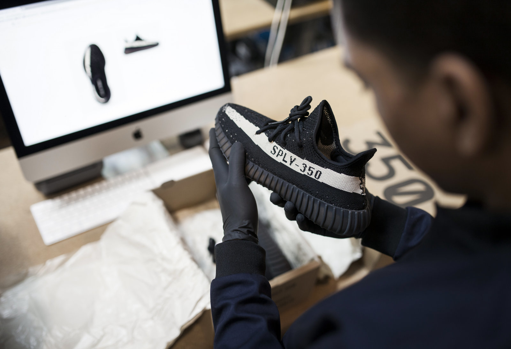

隨著近年球鞋在時尚界蔚為風潮，球鞋的轉賣事業更是連年增長，至今尚無減緩的趨勢。
過去這只是少數想脫手限量款的鞋頭們在玩的遊戲，如今，日益龐大的需求、「故意」稀少的現貨，造成了特有的炒賣文化，炒賣行為至今仍飽受爭議，其中風險過高、假貨盛行，暗藏許多不道德的行為，即便如此，炒賣能阻止嗎？不能，套用先前 INVINCIBLE 主理人 Jimmy 所說的，「你不用喜歡，你也不用抗拒它（炒賣），因為它永遠會存在，你只要清楚了解現在這個生態是什麼樣子，這樣就夠了。」可即便中國大陸有著毒和 Nice 這類交易平台，但能否讓假貨不來煩，則是平台能否長壽的秘訣。
球鞋轉售商機有多可觀？
近期國際知名的三大轉售網站 StockX、Goat 以及 Stadium Goods 因高額資金挹注震驚時尚版面。據 WWD 報導，StockX 近期完成第三輪融資 1.1 億美元，令其市值已超過 10 億美元；Goat 得到球鞋零售商 Foot Locker 1 億美元的投資，市值近 2 億；Stadium Goods 更獲得知名時尚電商 Farfetch 2.5 億美元的投資。看各家企業上億美金如此大手筆的投資，可想而知球鞋轉賣市場商機多驚人。
StockX 聯合創辦人暨前任 CEO Josh Luber，近期因 C 輪融資後將 CEO 之職交棒給前 eBay 資深副主席 Scott Cutler。photo via nba.com
但為何它們可以？你要先知道假貨有多煩
根據 WWD 指出，過往在資訊不流通時代的招式是不肖商人會用假貨以換尺寸的方式去換真鞋過來，或是說這是一雙官方未廣為發售的 Sample，直到對方到論壇求助時才發現自己被框了，這在線購買雖方便，但買到假貨的裙帶效應也讓人疑惑：「那個網站是不是都在賣假貨？」
根據 2016 年經濟合作暨發展組織所發佈的「假貨盜版的貿易趨勢」報告中，鞋類產業影響最為嚴重，尤其是美、法、義，因為很多假鞋都是在這兒集中生產，而 2018 年的「全球盜版報告」中認為，這商機將在 2020 年來到 1.82 兆美元。
所以為何那三大球鞋轉售平台成了買賣指標？
透過 Highsnobiety 的介紹，我們整理了幾家歐美最知名的轉售網站，供各位時尚迷、球鞋迷參考：
二手挖寶聖地 Grailed
Grailed 基本上就是拍賣平台（抽 6% 佣金），產品聚焦於時尚類，任何人都可以註冊、寄賣自己的 Rick Owens、Comme des Garçons 或 Helmut Lang；買家自行和賣家聯繫，不透過任何中介，再依購買經驗替買家評分。
Grailed 上的單品共分為 4 類：Grails（高端設計師商品）；Hype（Yeezy、Supreme 等最流行的潮牌）；Sartorial（高端經典精品）；Core（主流品牌）。每季，Grailed 團隊會推出「Grailed 100」企劃，集結各式最珍稀的男裝逸品，如 COMME des GARÇONS、Helmut Lang、Maison Margiela 等早已消失市面已久的單品。
此外，透過 Grailed 的 Staff Picks（員工選物）或 Master Class（大師課程）系列文章，你可能不是在消費，而是在長知識，不是資深時尚迷的你，逛久也會被教導這些商品、設計師的價值在哪裡，尤其哪個年代的設計更勝時下新品。（PS. Grailed 有專門的檢測團隊全天候查驗「商品」以及「賣家」的真偽，他們透過聯絡可疑賣家，要求更多的相片以確保真實性，但此種鑑定方式著實有限，Grailed 還是存在假貨流竄的風險。）
「保證全新/不會有假貨」StockX
StockX 是國外當前極受歡迎的球鞋、潮物（包括服飾、手錶、手袋）交易網站，其如此知名的原因，除了因為影星馬克華伯格、饒舌歌手阿姆等巨星都是該網站的投資人，另一重點則在於其顧名思義如「股票交易市場」的運作模式。
以 sacai x Nike LDWaffle 為例，買家可選擇綠色按鈕的 Buy（直接購入）或 Bid（再出價）；賣家則看紅色按鈕上最高的標價，你願意出售就按 Sell（賣出），當然每個尺寸價格有所不同。photo via StockX
當商品上架後，賣家可以即時看到買家的出價，用戶們以彼此同意的標價進行交易，也隨時能看到鞋款的價格走勢、不同尺寸的價差、近期最熱門的鞋款與品牌，所有資訊一覽無遺，讓用戶像股票用戶一樣，得以觀察心儀單品價格的走跌，找對時機入手。
每筆交易完成後，商品必須先寄到 StockX 位於底特律的總部，由工作人員負責檢驗球鞋真偽與狀態，確認後才會寄送到買家手上（目前全球真偽辨識中心包括底特律、亞利桑那、紐澤西、倫敦），這是他們家最自豪的鑑定程序。創辦人 Josh Luber 表示：「我們幾乎用盡所有科技，包括重量和密度的檢測儀器，我們有學徒制，透過輔導和長期培訓計畫確保工作人員的專業程度，我們必須將適合的鞋子送到適合的人面前，我們以此為目標不斷地學習。」（ps. StockX 上只會有全新品，並不如 Gralied 多為二手物，因此若你有販售穿過、折舊痕跡的商品，屆時被退回也是天經地義，也因為標榜這點，所以抽成也較高，抽多少則依賣家的交易頻率而定（交易次數越多、抽成越低），最初階（未達一定的交易次數）的賣家會被抽成 9.5％。）
Stock X 聯合創辦人 Josh Luber 於 2018 年表示，未來還是希望有實體販售點，或計畫在紐約設立永久的寄賣點。過去 Stock X 在洛杉磯、倫敦設立快閃店，也曾為芝加哥 ComplexCon 設立暫時的販售點，展示諸多 Jordan 的經典復古版。
2018 年 StockX 於紐約成立的臨時寄賣點，把球鞋拿去賣的當下，就能在現場得到款項 photo via solecollector
（可以看一下該團隊是如何發現問題）
集結 StockX 和 Grailed 優點的綜合體 Goat
洛杉磯的知名轉售平台 Goat（抽成 9.5％），由 Eddy Lu 和 Daishin Sugano 於 2015 年創立，2018 年併購知名寄賣零售廠商 Flight Club，目前市值近兩億美金。Highsnobiety 形容：「Goat 就像是賣二手品的 StockX、有正貨保證的 Grailed。」其運作模式和上述模式大同小異，賣家自行 po 出待售商品，網站則會顯示各款各尺寸的最低成交價，供買家參考。
此外，Goat 也不時會和品牌合作舉辦展覽或線下活動，如 2017 年 Goat 曾攜手 Supreme 舉辦展覽，展示品牌最稀有的聯名鞋款。也自行出版紙本雜誌《Greatest》，半年一刊，內容也同時在線上發布，報導涵蓋時尚、影視、藝術、音樂、設計等面向，各領域人物的採訪故事，如第三期的封面人物找來對熱愛球鞋文化的《怪奇物語》童星 Caleb McLaughlin。
是如何做到和 StockX 一樣的「沒假貨」？
一樣，賣家需要將鞋送到總部驗審，不過 GOAT 的驗證方式，是在數據庫儲存超過 75,000 筆不同鞋款的檔案，每雙鞋都各自詳細記錄的數據，以利 GOAT 確定商品真實性。其官網上寫道：「我們公司有專家會從標籤、拼接、紋理到顏色等各種項目去檢查。」
值得一提的是，今年 7 月，Goat 正式發佈中國版 App 和微信小程序，它成了第一個正式進軍亞洲市場的歐美球鞋寄賣平台，該團隊以上海為基地，領導整個亞太區的營運（但在中國賣家的商品如何進行真偽檢驗機制尚不得而知）。若台灣買家有意買賣二手球鞋，中文版 Goat 或許將成為另一大戰場。

所以球鞋轉售，能跟二手精品一樣長紅下去嗎？
WWD 認為，鞋類買家預測，因為過度飽和導致的需求減少，運動鞋市場的分界點即將到來。他以 Balenciaga Triple S 運動鞋為例，證實了更多色彩風格相似的球鞋持續發布將導致轉售價格下跌，「它們顯然只是通過銷售 Yeezy 和 Triple S 球鞋來賺取驚人的收入，但對於長期的商業戰略而言，這實際上是難以長久的。」
但 eBay 球鞋和男裝主任 Jeff Chan 則有不同的看法，「曾有人說過球鞋幾年前泡沫就會破，但它現在則變得越來越大。」他表示，「如今的 eBay 每天都有 50 萬雙球鞋在買賣，等於每 1.5 秒就會有一雙鞋被買走，當中有八成的球鞋是新的，九成是直接買走而非競標。」
知名精品二手寄賣平台 The Realreal 球鞋專家 Sean Conway 則指出，投資銀行 Cowen 的研究預測，球鞋轉售的年交易額將會在 2025 年突破 60 億美元，而 StockX 近期 10 億的品牌市值也是一個球鞋轉售在增強的跡象，可這數字被市場調查公司 NPD 集團質疑，分析師 Matt Powell 認為沒人在追蹤這個數據，「我預估會比這數字還要少一半。我覺得球鞋最大的因素就是其稀缺性，這是炒賣市場的致命弱點。」Matt Powell 表示，NPD 的研究顯示，會買球鞋的人僅不到 5% 會再去買「炒鞋」，而且當公司增加產量就會轉賣價格，「adidas 過去只發佈了極少量的 Yeezys，如今當品牌釋出 100 萬雙，那二手價就跟高空彈跳一樣。」對於「球鞋」市場，他不看好，但若以「炒賣」來看， Matt Powell 則覺得 StockX 那「多元」路線則是大家該去嘗試的。